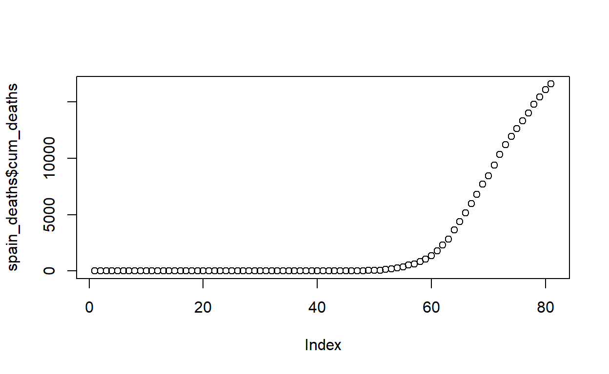

Table of Contents
Load the data
Will be using data made available by Johns Hopkins Center for Systems Science and Engineering (CSSE) https://github.com/CSSEGISandData/COVID-19.git
Confirmed cases
# A tibble: 21,374 x 7
# Groups: country, province [264]
country province lat lon date cum_cases cases
<chr> <chr> <dbl> <dbl> <date> <int> <int>
1 Afghanistan "" 33 65 2020-01-22 0 0
2 Albania "" 41.2 20.2 2020-01-22 0 0
3 Algeria "" 28.0 1.66 2020-01-22 0 0
4 Andorra "" 42.5 1.52 2020-01-22 0 0
5 Angola "" -11.2 17.9 2020-01-22 0 0
6 Antigua an~ "" 17.1 -61.8 2020-01-22 0 0
7 Argentina "" -38.4 -63.6 2020-01-22 0 0
8 Armenia "" 40.1 45.0 2020-01-22 0 0
9 Australia "Australian Ca~ -35.5 149. 2020-01-22 0 0
10 Australia "New South Wal~ -33.9 151. 2020-01-22 0 0
# ... with 21,364 more rows
# A tibble: 21,371 x 7
# Groups: country, province [264]
country province lat lon date cum_deaths deaths
<chr> <chr> <dbl> <dbl> <date> <int> <int>
1 Afghanistan "" 33 65 2020-01-22 0 0
2 Albania "" 41.2 20.2 2020-01-22 0 0
3 Algeria "" 28.0 1.66 2020-01-22 0 0
4 Andorra "" 42.5 1.52 2020-01-22 0 0
5 Angola "" -11.2 17.9 2020-01-22 0 0
6 Antigua an~ "" 17.1 -61.8 2020-01-22 0 0
7 Argentina "" -38.4 -63.6 2020-01-22 0 0
8 Armenia "" 40.1 45.0 2020-01-22 0 0
9 Australia "Australian ~ -35.5 149. 2020-01-22 0 0
10 Australia "New South W~ -33.9 151. 2020-01-22 0 0
# ... with 21,361 more rowsChina
Function to fit a Generalized Richards Model to cumulative incidence data
Define the GRM differential equation given by: \[dC/dt = r[C(t)]^p(1-C(t)/K)^\alpha\], where C(t) = cumulative number of cases at time t r = growth rate at the early stage p \(\epsilon\) [0, 1] = parameter that allows the model to capture different growth profiles including the constant incidence ( p = 0), sub-exponential-growth (0 < p < 1) and exponential growth ( p = 1) \(\alpha\) = measures the deviation from the symmetric s-shapes dynamics of the simple logistic curve
The model recovers the original Richards model for p = 1 and reduces to teh generalized logistic model for \(\alpha\) = and p = 1
Source: Wu et al. (2020)
We need a solver to solve the ordinary differential equation and an optimizer for the parameters K, r, p, \(\alpha\). We’ll use the function ode from the deSolve package and the base function optim to achieve this.
Let’s write a function to make predictions based on the fit. As a default, we’ll predict cumulative cases 14 days ahead of the latest date data were collected. We’ll also use those data and uncumulate them to get incidence predictions.
Lastly, create a plotting fucntion. We’ll plot both the cumulative and incidence fits against the observed data.
Ok, we are ready to get into the fun stuff. Let’s start with Hubei since that’s the literal epicenter of the pandemic and has way more cases than any other province in China.
Hubei
Confirmed cases
$par
K r p a
6.748366e+04 1.000000e+01 5.805342e-01 3.487302e+00
$value
[1] 209420364
$counts
function gradient
90 90
$convergence
[1] 0
$message
[1] "CONVERGENCE: REL_REDUCTION_OF_F <= FACTR*EPSMCH"The model converged! Let’s make some predictions
Confirmed deaths
Let’s do the same for deaths
$par
K r p a
3.274253e+03 9.998190e+00 9.271545e-01 1.526545e-02
$value
[1] 274344.4
$counts
function gradient
141 141
$convergence
[1] 0
$message
[1] "CONVERGENCE: REL_REDUCTION_OF_F <= FACTR*EPSMCH"Predictions
Lastly, create a plotting fucntion. We’ll plot both the cumulative and incidence fits against the observed data.
What’s the lag time in the peaks between confirmed cases and deaths
[1] "2020-02-12"
[1] "2020-02-10" "2020-02-11"Hong Kong
For Hong Kong, we need to provide the starting r to help the model out. Let’s use the log-linear fit from the incidence package
<list of incidence_fit objects>
attr(x, 'locations'): list of vectors with the locations of each incidence_fit object
'before'
'after'
$model: regression of log-incidence over time
$info: list containing the following items:
$r (daily growth rate):
before after
0.1390196 -0.1171971
$r.conf (confidence interval):
2.5 % 97.5 %
before 0.1134611 0.1645782
after -0.1565596 -0.0778346
$doubling (doubling time in days):
before
4.985966
$doubling.conf (confidence interval):
2.5 % 97.5 %
before 4.211658 6.109119
$halving (halving time in days):
after
5.914372
$halving.conf (confidence interval):
2.5 % 97.5 %
after 4.42737 8.905386
$pred: data.frame of incidence predictions (43 rows, 6 columns)
$par
K r p a
997.6494788 0.0964103 1.0000000 3.6750936
$value
[1] 79548.15
$counts
function gradient
173 173
$convergence
[1] 0
$message
[1] "CONVERGENCE: REL_REDUCTION_OF_F <= FACTR*EPSMCH"Great! That works.
EVerything but Hubei, Hong Kong, Inner Mongolia, Beijing, Shanghai and Heilongjiang
Some of the provinces seem to be getting a second wave of cases. Let’s remove these and see if we can use the model
<list of incidence_fit objects>
attr(x, 'locations'): list of vectors with the locations of each incidence_fit object
'before'
'after'
$model: regression of log-incidence over time
$info: list containing the following items:
$r (daily growth rate):
before after
0.17294921 -0.04507202
$r.conf (confidence interval):
2.5 % 97.5 %
before 0.12254503 0.22335339
after -0.06240816 -0.02773588
$doubling (doubling time in days):
before
4.007808
$doubling.conf (confidence interval):
2.5 % 97.5 %
before 3.103365 5.656265
$halving (halving time in days):
after
15.37866
$halving.conf (confidence interval):
2.5 % 97.5 %
after 11.10668 24.99099
$pred: data.frame of incidence predictions (79 rows, 6 columns)
$par
K r p a
1.188104e+04 1.000000e+01 5.584026e-01 1.100157e+00
$value
[1] 2137877
$counts
function gradient
84 84
$convergence
[1] 0
$message
[1] "CONVERGENCE: REL_REDUCTION_OF_F <= FACTR*EPSMCH"South Korea
$par
K r p a
9771.7699891 0.2299594 1.0000000 0.7778226
$value
[1] 14232482
$counts
function gradient
100 100
$convergence
[1] 0
$message
[1] "CONVERGENCE: REL_REDUCTION_OF_F <= FACTR*EPSMCH"
$par
K r p a
242.08766398 0.08409304 1.00000000 1.25928062
$value
[1] 1934.225
$counts
function gradient
133 133
$convergence
[1] 0
$message
[1] "CONVERGENCE: REL_REDUCTION_OF_F <= FACTR*EPSMCH"What’s the lag time in the peaks between confirmed cases and deaths
[1] "2020-03-04"
[1] "2020-03-25"Italy
$par
K r p a
1.686799e+05 7.155707e-01 7.868981e-01 1.999994e+01
$value
[1] 3950457336
$counts
function gradient
133 133
$convergence
[1] 0
$message
[1] "CONVERGENCE: REL_REDUCTION_OF_F <= FACTR*EPSMCH"The GRM model struggles to fit the death data. We can use the Generalized Logistic Regression model using the nlsLM function from the minpack.lm package, which is: \[C(t) = p/(1+exp(- \alpha\ (t- \beta\ ))\]
Reference: IHME (https://ihmeuw-msca.github.io/CurveFit/methods/)
Spain
$par
K r p a
1.537190e+05 2.770593e-01 9.157889e-01 1.490584e+01
$value
[1] 1697847339
$counts
function gradient
169 169
$convergence
[1] 0
$message
[1] "CONVERGENCE: REL_REDUCTION_OF_F <= FACTR*EPSMCH"

Germany
$par
K r p a
1.194792e+05 2.888860e-01 9.033531e-01 2.000000e+01
$value
[1] 1093830927
$counts
function gradient
128 128
$convergence
[1] 0
$message
[1] "CONVERGENCE: REL_REDUCTION_OF_F <= FACTR*EPSMCH"In the test run above, the NLS LM using the Levenberg-Marquardt is better and faster.
Final thoughts: nlslm is way faster than using the optim function for GRM and may even be more accurate. Moving forward that’s what I’ll use.